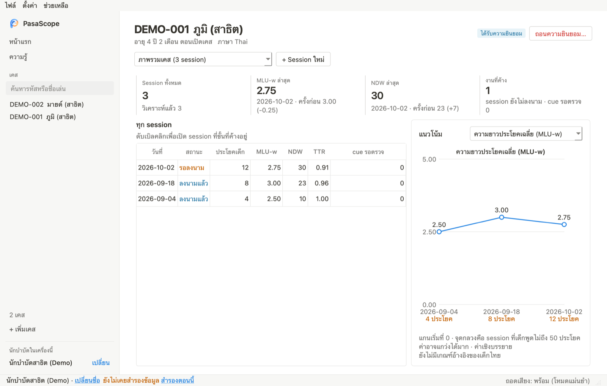
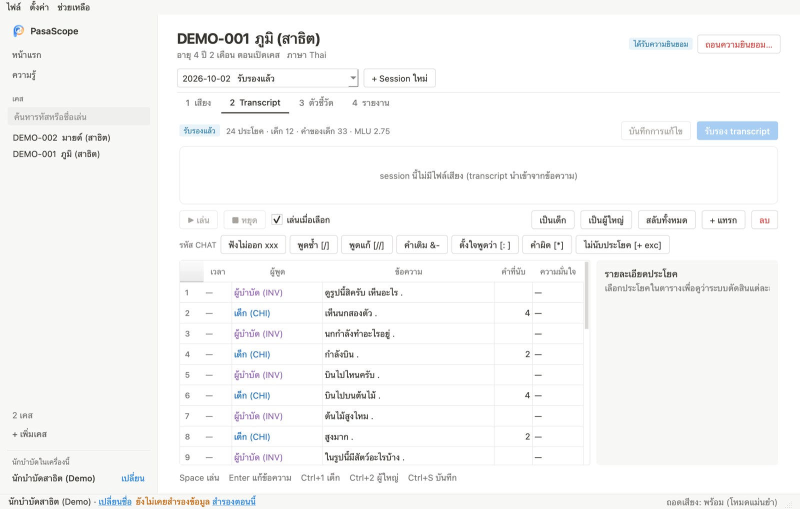
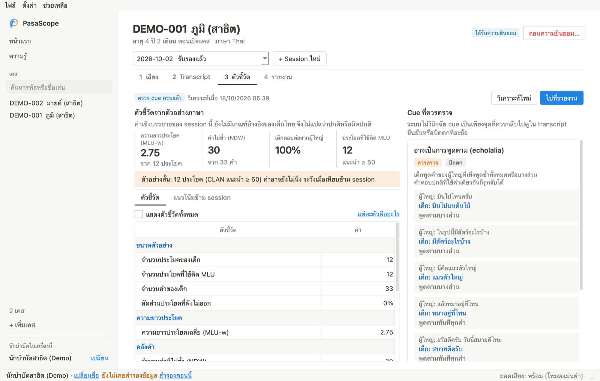
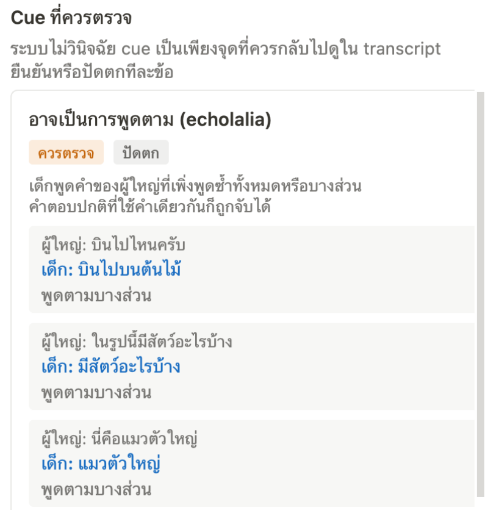
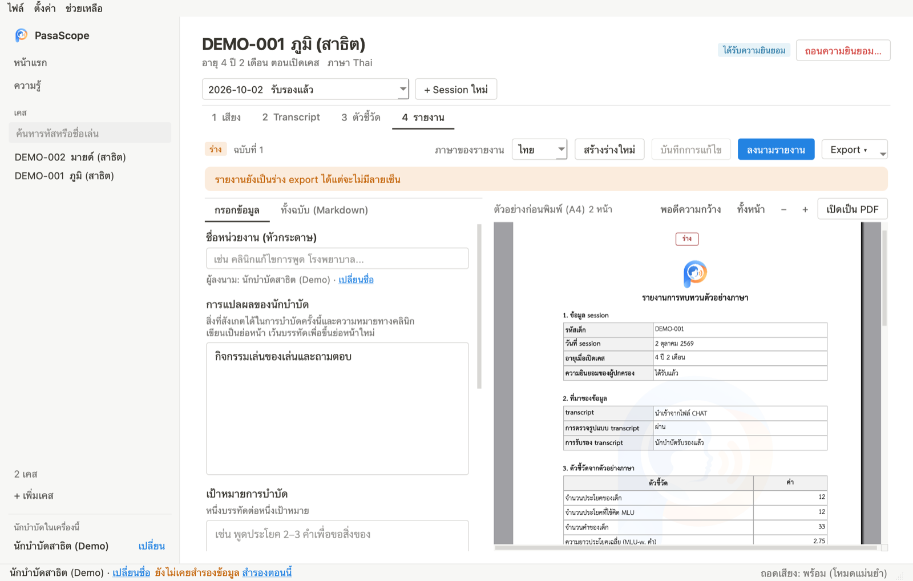
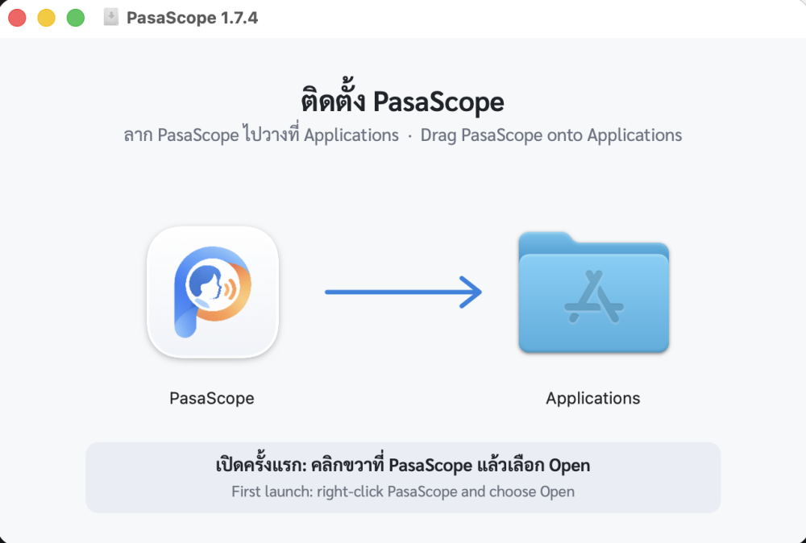

ถอดเสียงและวัดตัวอย่างภาษาของเด็ก
บน Mac ของคุณเอง
Transcribe and measure a child's language sample, on your own Mac
PasaScope (ภาษา-สโคป) ช่วยนักแก้ไขการพูดถอดเสียงภาษาไทย ตรวจ transcript คำนวณตัวชี้วัด และร่างรายงาน โดยเสียงและข้อมูลเด็กไม่ออกจากเครื่อง PasaScope helps speech-language therapists draft a Thai transcript, check it, compute language measures and write the report, without recordings ever leaving the computer.
Mac ชิป Apple (M1 ขึ้นไป) · macOS 12 ขึ้นไป · ไม่มีค่าใช้จ่าย Apple silicon Mac (M1 or later) · macOS 12 or later · free

จากเสียงถึงรายงาน ใน 4 ขั้นFrom recording to report in four steps
ทุกขั้นนักบำบัดเป็นผู้ตัดสินใจ โปรแกรมช่วยร่างและคำนวณ The therapist decides at every step; the app drafts and counts.
ถอดเสียงและตรวจ transcriptTranscribe and check
อัดเสียงในโปรแกรมหรือเลือกไฟล์เสียง โปรแกรมถอดเป็น transcript รูปแบบ CHAT และแยกเสียงเด็กกับผู้ใหญ่ให้ก่อน นักบำบัดฟังทีละประโยค แก้ข้อความและผู้พูด แล้วรับรอง หรือนำเข้าไฟล์ .cha ที่มีอยู่แล้วก็ได้
Record in the app or open a recording. PasaScope drafts a CHAT transcript with child and adult turns separated; you listen line by line, correct the text and speakers, and attest it. A .cha file can be imported instead.

ตัวชี้วัดที่อธิบายได้Measures you can explain
ความยาวประโยคเฉลี่ย (MLU-w) จำนวนคำไม่ซ้ำ (NDW) อัตราที่เด็กตอบต่อจากผู้ใหญ่ และตัวชี้วัดหลักอีกรวม 11 ตัว ทุกตัวมีคำอธิบายว่าคืออะไร ช่วยอย่างไร และควรระวังอะไร
MLU-w, NDW, how often the child answers an adult, and the other main measures, 11 in all. Each one says what it is, how it helps and what to watch for.

ชี้จุดที่ควรกลับไปดูLines worth a second look
เช่น ประโยคที่อาจเป็นการพูดตาม (echolalia) แสดงคู่ประโยคของผู้ใหญ่กับเด็กและเหตุผล นักบำบัดยืนยันหรือปัดตกเอง ระบบไม่วินิจฉัย
Such as possible echolalia, shown with the adult's line, the child's line and the reason. You confirm or dismiss each one; nothing is diagnosed.

รายงาน A4 พร้อมลงนามA4 report, ready to sign
กรอกการแปลผล เป้าหมาย และคำแนะนำ เห็นหน้ากระดาษจริงทันทีขณะพิมพ์ ภาษาไทยหรืออังกฤษ แล้วลงนามและ export เป็น PDF
Fill in the interpretation, goals and recommendations and watch the printed page update as you type, in Thai or English. Then sign and export a PDF.

ภาพจากข้อมูลสาธิต (บทสนทนาที่เขียนขึ้น) ไม่ใช่ข้อมูลเด็กจริง Screens show demonstration data written for the purpose, not a real child.
ข้อมูลอยู่กับคุณYour data stays with you
ไม่มีบัญชีผู้ใช้ ไม่มีเซิร์ฟเวอร์ อินเทอร์เน็ตใช้แค่ตอนดาวน์โหลดโมเดลและตรวจหาอัปเดต No account and no server. The internet is used only to download the speech models and check for updates.
ถอดเสียงบนเครื่องTranscribed on your Mac
โมเดล Whisper ภาษาไทยทำงานบนเครื่อง เสียงไม่ถูกส่งไปที่ใด
The Thai Whisper model runs on the computer; recordings are not sent anywhere.
สำรองและกู้คืนBack up and restore
สำรองทั้งหมดเป็นไฟล์เดียว และหน้าแรกเตือนเมื่อไม่ได้สำรองนาน
One backup file holds everything, and Home reminds you when a backup is due.
อัปเดตอย่างปลอดภัยSafe updates
อัปเดตจากในโปรแกรม สำรองข้อมูลก่อน และตรวจ SHA-256 ของทุกไฟล์
Update from inside the app: it backs up first and checks every file's SHA-256.
ดาวน์โหลดและติดตั้งDownload and install
ใช้เวลาประมาณ 10 นาที รวมดาวน์โหลดโมเดลถอดเสียง About ten minutes, including the speech model download.
เครื่องที่ใช้ได้What you need
- Mac ชิป Apple (M1 ขึ้นไป) ดูได้ที่เมนู Apple → เกี่ยวกับ Mac เครื่องนี้ → ชิป ยังไม่รองรับ Mac ชิป Intel
- macOS 12 ขึ้นไป
- พื้นที่ว่างประมาณ 5 GB
- A Mac with Apple silicon (M1 or later): Apple menu → About This Mac → Chip. Intel Macs are not supported yet.
- macOS 12 or later
- About 5 GB free
-
ดาวน์โหลดDownload
กดปุ่ม ดาวน์โหลดสำหรับ Mac จะได้ไฟล์
PasaScope-x.y.z.dmg(ประมาณ 390 MB)Click Download for Mac to get
PasaScope-x.y.z.dmg(about 390 MB). -
ลากไปที่ ApplicationsDrag to Applications
ดับเบิลคลิกไฟล์ที่ได้ ลากไอคอน PasaScope ไปวางบน Applications ตามลูกศร แล้วกดดีดออก (⏏) ใน Finder
Open the file, drag PasaScope onto Applications along the arrow, then eject (⏏) it in Finder.
-
อนุญาตให้เปิดครั้งแรกAllow the first launch
PasaScope ยังไม่ได้ลงทะเบียนนักพัฒนากับ Apple ครั้งแรก macOS จึงปิดกั้นไว้ ให้ทำครั้งเดียว:
- ดับเบิลคลิก PasaScope ใน Applications แล้วกด เสร็จสิ้น
- ไปที่ การตั้งค่าระบบ → ความเป็นส่วนตัวและความปลอดภัย เลื่อนลงไปที่ส่วนความปลอดภัย
- กด ยืนยันจะเปิด แล้วใส่รหัสผ่านของเครื่อง
- macOS 12–14: คลิกขวาที่ PasaScope แล้วเลือก เปิด ได้เลย
PasaScope is not notarised by Apple yet, so macOS blocks it the first time. Once only:
- Open PasaScope from Applications and click Done.
- Go to System Settings → Privacy & Security and scroll to Security.
- Click Open Anyway and enter your password.
- On macOS 12–14, right-click PasaScope and choose Open.
-
ตั้งค่าครั้งแรกFirst setup
ใส่ชื่อนักบำบัด (ใช้รับรองและลงนาม) แล้วไปที่ ตั้งค่า → ดาวน์โหลดโมเดลถอดเสียง… ประมาณ 1.5 GB ทำครั้งเดียว เปลี่ยนเป็นภาษาอังกฤษได้ที่ ตั้งค่า → ภาษา
Enter your name (it signs attestations and reports), then Settings → Download speech models…, about 1.5 GB, once. Switch to English in Settings → Language.

คำถามที่พบบ่อยQuestions
อัปเดตโปรแกรมอย่างไร ข้อมูลจะหายไหมHow do I update, and will I lose data?
PasaScope ตรวจหารุ่นใหม่วันละครั้ง หรือกด ช่วยเหลือ → ตรวจหาอัปเดต… โปรแกรมสำรองข้อมูลก่อน ดาวน์โหลดและตรวจไฟล์ แล้วให้ลากตัวใหม่ไปแทนที่ใน Applications ข้อมูลเคสเก็บแยกจากตัวโปรแกรม จึงไม่หาย
PasaScope checks once a day, or use Help → Check for updates…. It backs up first, downloads and checks the new version, and you drag it over the old one in Applications. Cases are stored apart from the app, so nothing is lost.
ข้อมูลเก็บไว้ที่ไหนWhere is my data?
บนเครื่องนี้เท่านั้น ที่ ~/Library/Application Support/PasaScope (ไฟล์ → เปิดโฟลเดอร์ข้อมูล) สำรองได้ที่ ไฟล์ → สำรองข้อมูล… ทุกการเปลี่ยนแปลงถูกบันทึกใน audit log ที่แก้หรือลบไม่ได้
On this computer only, in ~/Library/Application Support/PasaScope (File → Open data folder). Back it up with File → Back up…. Every change is recorded in an audit log that cannot be edited.
ใช้กับ Windows หรือ Mac ชิป Intel ได้ไหมWindows or an Intel Mac?
ยังไม่ได้ ตอนนี้รองรับเฉพาะ Mac ชิป Apple
Not yet: only Macs with Apple silicon.
ถอดเสียงแม่นแค่ไหนHow accurate is the transcription?
เสียงเด็ก เสียงรบกวน และการพูดซ้อนกันทำให้ถอดผิดได้ จึงต้องตรวจทุกประโยคก่อนรับรอง ตัวชี้วัดคำนวณจาก transcript ที่นักบำบัดรับรองแล้วเท่านั้น โหมดแม่นยำใช้เวลาประมาณ 5 เท่าของความยาวเสียง โหมดเร็วประมาณเท่าความยาวเสียงแต่ผิดมากกว่า
Children's voices, noise and overlapping talk cause errors, so every line is checked before attesting; measures come only from an attested transcript. Accurate mode takes about five times the recording's length; fast mode about its length, with more errors.
ใครพัฒนา และแจ้งปัญหาได้ที่ไหนWho makes it, and where do I report a problem?
PasaScope เป็นต้นแบบเพื่อการศึกษาและวิจัย ภาควิชาเทคนิคการแพทย์ มหาวิทยาลัยมหิดล ยังไม่ผ่านการทดสอบทางคลินิกกับเด็กไทย แจ้งปัญหาได้ที่ GitHub Issues ห้ามแนบเสียง ชื่อ หรือข้อมูลที่ระบุตัวเด็ก
PasaScope is an educational and research prototype from the Department of Medical Technology, Mahidol University, not yet clinically validated with Thai children. Report problems on GitHub Issues, without recordings, names or anything that identifies a child.